A platform with no product inside it
Realize is an enterprise cybersecurity platform built around four core capabilities: running security assessments, deploying solutions, managing incidents, and automating tasks through AI agents. The technical foundation was solid. But when I arrived, the product didn't exist.
What I found on day one was essentially a landing page with four unlabelled entry points. The screens had been AI-generated and handed directly to engineering — no UX logic, no user flows, no structure. Nobody had designed the system. Nobody had even asked what order the modules should be used in.
A security team logging into Realize for the first time saw four unnamed module tiles and no signal of where to begin. Most couldn't navigate past the first screen without asking for help. The platform had features. It had no product experience.
Walking me through the product vision before I'd seen a single screen
The engineering team had built something technically real — four capable modules on a solid foundation. But the product experience hadn't been built yet. What existed was closer to a collection of rooms than a building: each module functional in isolation, but with no front door, no hallway connecting them, and no sign telling you where to start.
The founder's vision was vivid and coherent. The platform hadn't caught up to it yet.
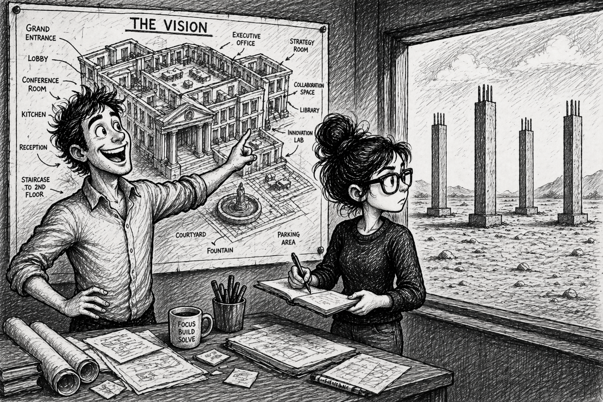
What my work actually covered
I came in as the sole designer on this project. There was no design team, no existing design system, no prior UX work to build from. I owned the entire design process — from initial research through to final UI delivery.
🔬 Research
AI-assisted secondary research, competitive analysis of enterprise security tools, and direct user interviews with security professionals to understand real workflows.
🗂️ Synthesis
Affinity mapping, persona creation, problem statement definition, HMW framing, and translating raw insights into design opportunities.
🏗️ Architecture
Designed the full information architecture — how four modules connect, how users move between them, and how AI acts as the layer reducing complexity throughout.
🎨 Design Execution
Wireframes, visual language, a full design system, and high-fidelity screens for all key flows including onboarding, dashboard, deploy, manage, agents, and the AI chatbot.

No existing design foundation, no user data, and a technical team that had already shipped some screens without design input. I had to move fast, validate as I went, and sometimes work around engineering decisions that were already in flight.
The brief I was handed
The problem statement I received at the start was broad but real: users cannot understand the platform. They log in, they see modules, and they don't know what to do. They don't know where to start, what order to follow, or what any given action will result in.
With that framing in place, I went into research with a clear goal: understand how security teams actually work, what tools they use today, where they struggle, and what a platform that genuinely helps them would need to do differently.
Two designers, one week, a modified design sprint
Engineering was already moving. There was no time for a long research phase, no room for weeks of ideation. I was working alongside one other designer — two of us total — and we needed to go from a vague problem to a concrete platform structure as fast as responsibly possible.
We adapted the classic 5-day design sprint format to fit our constraints. Not a textbook sprint — we stretched it to a week and shaped each phase around what this project actually needed. The goal wasn't to design every screen in five days. It was to establish the right structure, logic, and design direction before a single pixel was pushed.
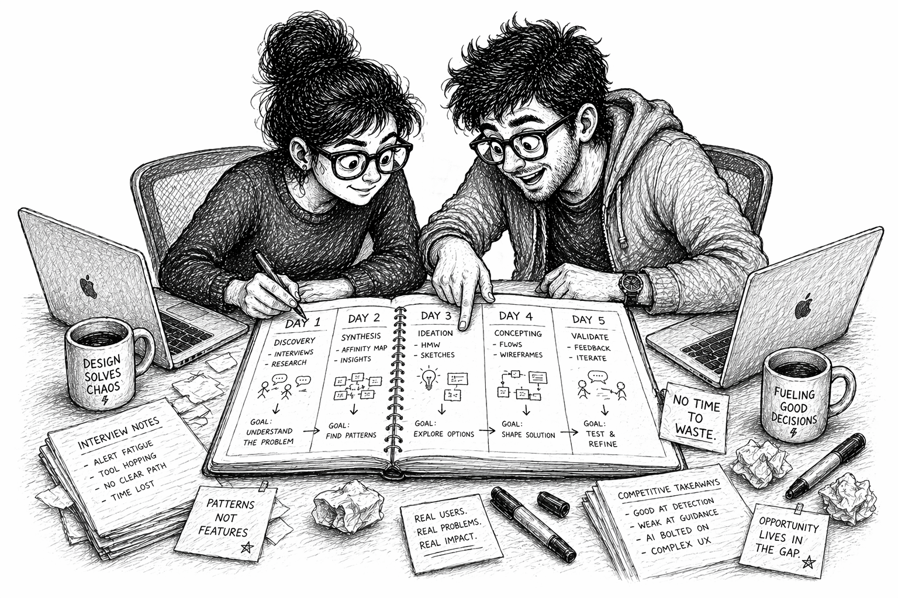
Before sketching anything, we needed everyone pointing at the same problem. We ran alignment sessions with the founder and the engineering team to separate vision from assumptions and make sure we were solving the right thing.
We didn't want to design in a vacuum. We studied how the best (and worst) enterprise security tools handle the same problems — not to copy them, but to understand what patterns users already know and where every competitor consistently fails.
We mapped the two users who matter most — the ops lead making decisions under pressure, and the engineer executing those decisions in the platform. Then we defined what each one actually needs to do, in what order, and how often.
With a shared understanding of users and constraints, we diverged — each exploring different structural approaches before comparing. The goal wasn't polish. It was breadth: find as many ways to solve the navigation and workflow problem as possible before committing to any.
We brought our sketches together, stress-tested the best ideas against scalability and engineering feasibility, and committed to a direction. By end of day 5 we had the core platform structure — the logic that all subsequent design work would build on.
A validated platform structure — four modules with a clear entry logic, a defined assess-to-deploy handoff, and an AI chatbot layer that connected it all. Not screens. Not pixels. A system that everyone on the team understood and agreed on. That's what made everything that came after possible.
Finding the gaps before designing the fix
Research in this project had a real constraint: time. A full research sprint wasn't feasible — engineering was already moving. I needed to be strategic about what I could learn quickly, and rigorous about how I used it.
I ran three parallel streams: AI-assisted secondary research to quickly map the landscape, competitive analysis to understand what existing tools do well and where they fall short, and direct user interviews with security professionals to ground everything in real behaviour.
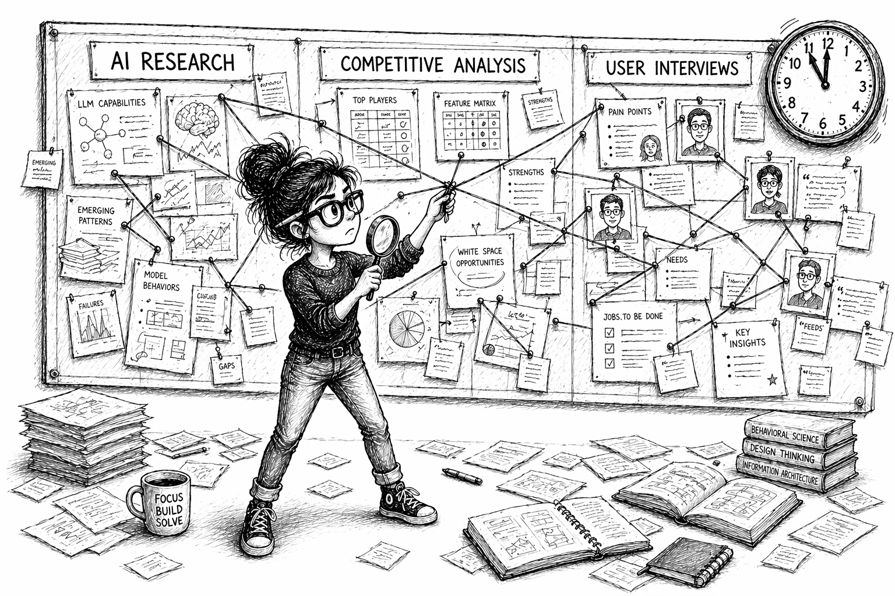
Moving fast without cutting corners
With limited time for traditional secondary research, I used Claude and Perplexity to rapidly synthesise existing knowledge — academic papers, industry reports, practitioner forums, and CISO-level content — about how enterprise security teams work and where they struggle most.
When you don't have weeks for literature review, AI tools can surface patterns across hundreds of sources in hours. The goal isn't to replace rigorous research — it's to build a well-informed foundation quickly, so that the time you do spend with real users is focused on the right questions, not starting from zero.
📚 What I fed in
Security team workflow documentation, CISO pain point surveys, industry reports on SOC analyst burnout, tool fragmentation studies, and AI in security adoption trends.
🎯 What I asked for
Common workflow breakdowns, where teams lose time, what decisions are hardest to make under pressure, and where AI assistance was most and least trusted.
📍 What it surfaced
A consistent pattern: security professionals are overwhelmed not by lack of data, but by inability to act on it quickly. Too much information, too little guidance.
⚠️ How I used it
As a hypothesis-builder, not a truth-teller. Every pattern flagged by AI research was carried into user interviews as a question to validate — not an assumption to design around.
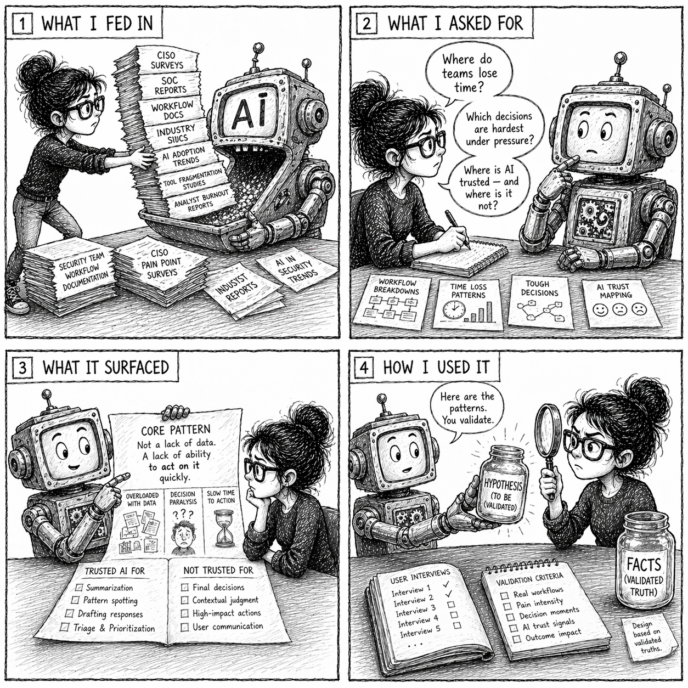
What's already out there — and what's missing
I studied the three most widely used enterprise security platforms — Microsoft Sentinel, Palo Alto Cortex, and CrowdStrike Falcon — not to replicate them, but to understand their mental model and find where they all fail together.
The pattern was consistent across all three: strong on detection, weak on action. Each platform shows you the problem with impressive clarity. None of them help you solve it efficiently.
| Aspect | MS Sentinel | Cortex (Palo Alto) | CrowdStrike |
|---|---|---|---|
| Core strength | Data aggregation, SIEM | XDR, automation | Endpoint protection, threat intel |
| Guided workflows | ❌ Minimal | 🟡 Partial playbooks | ❌ User-driven |
| Deployment UX | Complex, config-heavy | Moderate friction | Agent-based, manual |
| AI assistance | 🟡 Copilot add-on | 🟡 Limited NLP | 🟡 Charlotte AI |
| Alert fatigue | High — no prioritisation | Moderate | High volume alerts |
| Learning curve | Steep | Moderate-steep | Moderate |
| Biggest gap | Too much data, no guidance | Complex for newer users | Fragmented across tools |
What security professionals actually said
Time constraints meant I couldn't run a full research panel. I was able to talk to a small group of security professionals — a security operations lead and a cloud security engineer — whose daily reality gave me what secondary research couldn't: the texture of the friction.
Sessions were conversational — 30–45 minutes over calls. The goal wasn't to validate a list of assumptions, it was to understand the daily workflow and find where it breaks.
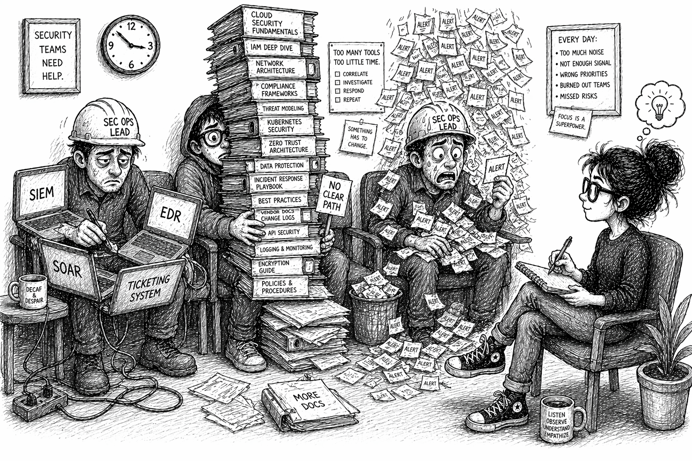
Security professionals are not looking for more information — they're drowning in it. What they need is a system that tells them what to do next and helps them do it. The intelligence already exists in their tools. The guidance does not.
Making sense of everything I found
By the end of the research phase I had AI-generated literature patterns, competitive teardown notes, interview transcripts, and my own observations from the founder conversation — all sitting across different documents and tabs. The next step was to stop collecting and start connecting.
Synthesis is where the real design work begins. Raw findings don't tell you what to build. Synthesis shows you the patterns inside those findings — the recurring pain, the structural gaps, the moments where every source points to the same underlying problem.
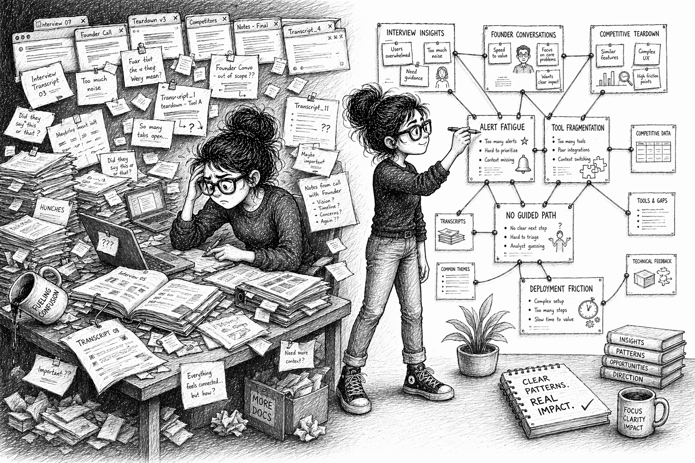
From scattered inputs to visible patterns
By this point I had a lot of raw material — but it was fragmented across different sources and people. I'd spoken to the founder about his vision, had conversations with engineers already building the platform, talked to security professionals about their real daily workflows, and pulled in competitive observations and AI-research patterns. Everything was in different tabs, voice notes, and documents.
Affinity mapping was how I made sense of all of it. I broke everything down into individual observations — one idea, one quote, one friction point per note — and then started grouping them by what they had in common. No pre-set categories. I let the clusters form naturally and named them only once the pattern was clear.
Founder vision brief · Engineer conversations (what was already built and why) · Security ops lead interview · Cloud engineer interview · AI-assisted literature patterns · Competitive teardown observations · My own first-hand observations of the platform
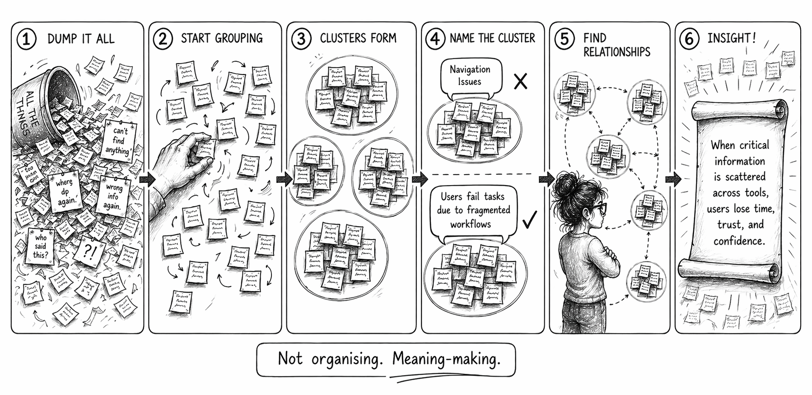
Four themes emerged. Every finding mapped cleanly to one of them — which meant the problem space had a real shape, not just a list of complaints.
| ⚠️ Pain Points | 🧩 Theme / Pattern | 💡 Design Opportunity |
|---|---|---|
| "No clear starting point — 4 unlabelled tiles" · "Users don't know what order to use modules" · "First screen causes abandonment" | 🎯 Navigation & Entry | Four-path landing that gives every user instant orientation — role-appropriate entry in under 5 seconds, no guesswork |
| "4+ tools for one incident response cycle" · "Copy-pasting data between dashboards" · "Context is lost every time I switch tools" · "No single source of truth" | ⚡ Tool Fragmentation | Connected workflow logic — assessment findings feed directly into deployment config, no re-navigation or manual handoff |
| "Too many alerts, no prioritisation" · "I can't tell signal from noise" · "AI outputs exist but the guidance doesn't" · "I spend 2hrs every morning figuring out what to look at" | 📊 Alert Fatigue | AI chatbot as structural guide — not a sidebar widget, but the layer that surfaces what matters and tells you what to do next |
| "Deployment takes a full day" · "I re-read the docs every single time" · "No guided step-by-step" · "Manual configuration blocks my speed" | 🔧 Deployment Friction | Guided deployment flows — AI-assisted, step-by-step, no manual configuration required. Anyone on the team can deploy, not just the most senior engineer |
Four patterns. Four design directions. Everything that followed — the problem statement, the HMW questions, the solution directions — was built directly on top of these clusters.
Two users. Two very different needs.
Research consistently pointed to two distinct user types — not just different roles, but fundamentally different relationships with the platform. One needed to make fast decisions. The other needed to execute complex tasks without breaking anything. Every design decision from here was run through both of them.
What the research was actually telling me
Research, synthesis, affinity mapping, and personas all pointed in the same direction. This section is where everything converges — the validated problem statement, the reframed design questions, and the specific directions that guided every decision from here forward.
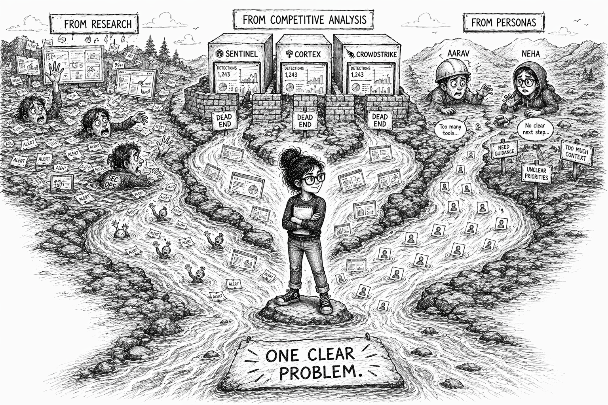
The real problem was never the features
The original brief — "users can't understand the platform" — was pointing at a symptom, not a cause. Research forced a reframe.
Enterprise security teams are not short on information or tools — they're short on guided action. Existing platforms excel at detecting and displaying problems, but leave users to manually piece together what to do next, how to do it, and in which tool. Realize had the same gap. The solution required redesigning not just the interface, but the underlying logic of how the system talks to its users.
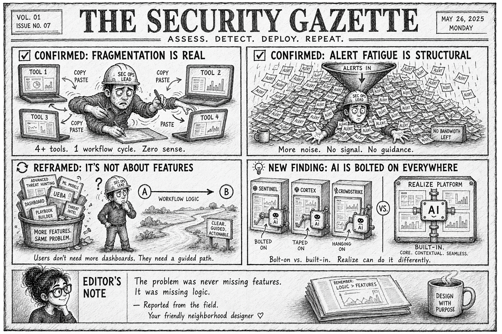
Turning problems into design questions
HMW questions are the bridge between a validated problem and an actual design direction. They're deliberately open — specific enough to point somewhere, broad enough to invite creative thinking.

Where design effort should go
Not every problem is equally solvable through design. These four directions had the strongest signal from research — the most frequent pain, the most users affected, and the clearest path to meaningful improvement. They became the north star for every decision that followed.
Replace the four unlabelled tiles with a platform that tells users where they are and what to do — in under five seconds. Structure has to precede any specific feature work.
Design the platform so that completing one module naturally leads into the next — assessment findings should feed directly into deployment options, not require re-navigation.
Make the AI chatbot the connective tissue of the platform — the thing that bridges modules, answers questions mid-workflow, and executes actions on behalf of users.
Turn multi-day manual configuration into a guided, step-by-step flow that anyone on the team can complete — not just the most senior engineer who's done it before.
Back to the beginning — with everything we knew
Ideation wasn't a blank-slate exercise. By this point we had the research, the affinity clusters, the validated problem statement, the personas, and the sprint structure behind us. The question wasn't "what could this platform be?" — it was "given everything we now know, what should it actually be?"
We went back through all of it — every insight, every friction point, every stakeholder conversation — and used that as the raw material for ideation. The goal was to translate understanding into structure: what does a platform that solves these specific problems actually look like to navigate?
Rather than jumping straight into Figma, we started by re-reading everything: research outputs, affinity clusters, persona goals, and the validated problem statement. Only once the problem was fully loaded did we start exploring structural solutions — navigation models, module entry logic, AI interaction patterns, and the critical assess-to-deploy handoff.
- →Affinity clusters and the 4 pain themes
- →Persona goals, frustrations, and mental models
- →Validated problem statement and HMW questions
- →Competitive benchmarks — what Sentinel, Cortex, CrowdStrike do and don't do
- →Founder's original vision — one system, start to finish
- →Different navigation structures — linear, hub-and-spoke, AI-led
- →How the four modules should connect to each other
- →The assess → deploy handoff — the most critical transition to design correctly
- →Where the AI chatbot lives and what it controls vs. surfaces
- →How to serve two different users in the same interface without compromising either
Once we had a direction we believed in — the four-path landing with AI as the connective layer — we moved into Figma to build a low-fidelity prototype. This wasn't about making it look good. It was about making the structure tangible enough to test, present, and get alignment on before committing to high-fidelity work.
The prototype captured the core navigation logic, the assess-to-deploy flow, and the AI chatbot interaction model. We walked the founder and key stakeholders through it — using it as a tool for conversation, not a finished deliverable. The goal was to surface disagreements early, before they became expensive.
The four-path structure worked — stakeholders immediately understood where to go and what each module did. The assess → deploy handoff was the moment everyone got excited about. And the AI chatbot as a structural layer, not a widget, was the idea that aligned everyone on what made Realize different.
A short walkthrough of the low-fidelity Figma prototype — the structure and flows presented to the founder and stakeholders before high-fidelity design began.
To add the video: replace the src="" on the iframe above with your YouTube embed URL — e.g. https://www.youtube.com/embed/YOUR_VIDEO_ID
A platform that guides, not just informs
Most enterprise tools expect users to learn the system. Realize was designed to do the opposite — the system should learn the user's intent and guide them to action.
Instead of thinking about Realize as four modules the user navigates between, I thought about it as a single continuous workflow the user moves through. Assessment surfaces a problem. Deployment offers the fix. Management tracks the result. Agent Factory automates the repetition. And the AI chatbot is the guide at every step, filling the gaps that structure alone can't cover.
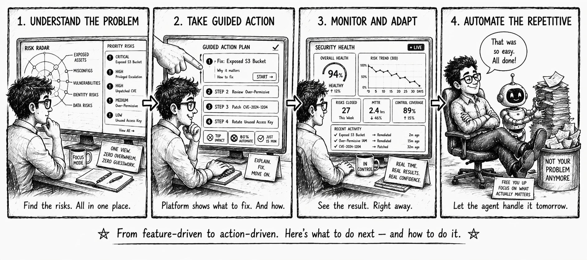
Architecture before interface
Before touching a single screen in Figma, I mapped the full experience structure — how the platform is organised, how users move through it, and how each module connects to the next. Structure has to be right before visual design begins. Otherwise you're just decorating a broken system.
This is the phase most people rush through — they see wireframes as a stepping stone to the "real" design. But for a platform with four distinct modules, two very different user types, and an AI layer threaded across all of it, getting the structure wrong would have cost weeks of rework. So I slowed down here deliberately.
A beautiful screen built on a broken structure is still broken. Users don't experience pixels — they experience sequences. When those sequences don't make sense, no amount of visual polish will save the product. The structure work here directly determined how every screen was laid out, what actions appeared where, and how the modules communicated with each other.
🗺️ What I mapped
The full IA — every section, every sub-section, every entry point. How a user navigates into each module and what they encounter at each step of the journey.
🔗 How modules connect
The critical handoffs — especially Assess → Deploy. Where does one module end and another begin? What data travels between them? How does the AI chatbot bridge the gap?
👤 Two users, one system
Every structural decision was filtered through both personas. Aarav needs fast access to high-level views. Neha needs depth and step-by-step control. The structure had to serve both without compromise.
⚡ First-time vs. returning
A first-time user needs a guided path. A returning user needs direct access. The structure accounts for both — onboarding logic that fades out as users build familiarity with the system.
How users actually move through the system
I mapped three core flows that represent the most common and highest-stakes journeys on the platform. Each flow was validated against the personas — does this make sense for Aarav? Does Neha need more steps or fewer?
This is the most important flow in the product — the moment where an assessment finding becomes a deployment action. In every competitor platform, this handoff is manual. In Realize, it's designed to be seamless.
One platform, four clear entry points
Before the UI, I defined the full IA — what content exists, how it's grouped, and how each module's navigation relates to a shared platform structure. The goal wasn't four separate tools that happened to live in the same URL. It was one system with a clear logic for how everything connects.
The platform's four modules aren't parallel options — they're sequential stages of a security workflow. The IA had to make that sequence legible without forcing users into a rigid linear path. Power users need to jump directly. New users need the sequence to be obvious.
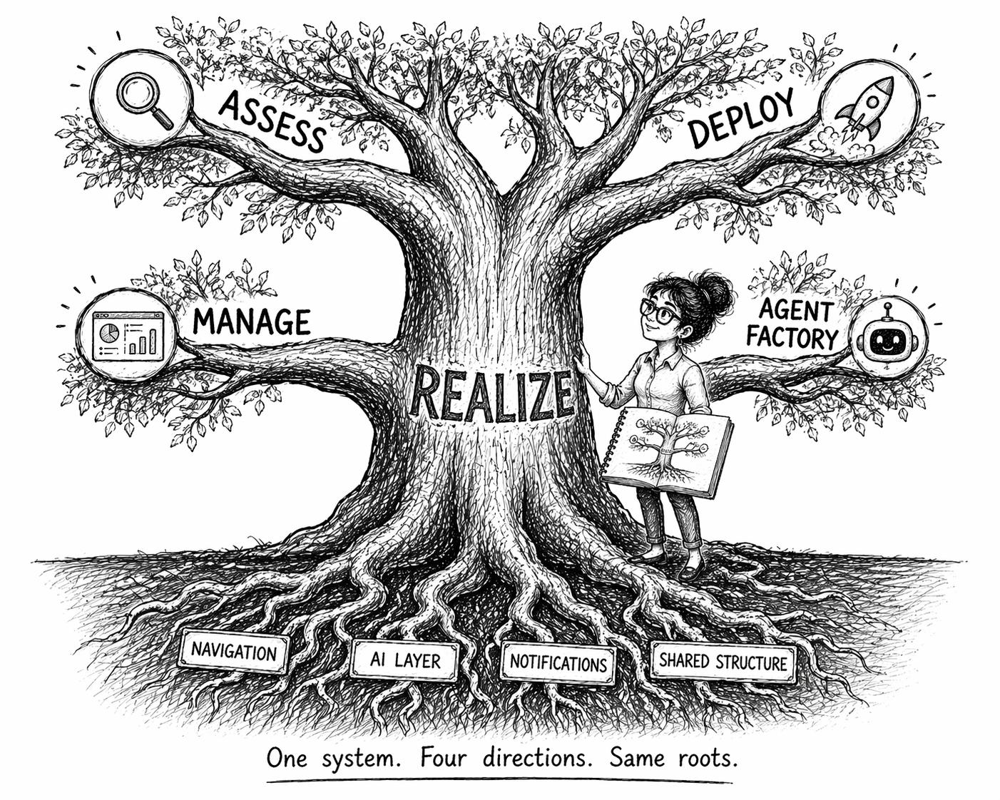
🔁 What stayed consistent across modules
Top navigation with module tabs, an AI chatbot accessible from anywhere, a notifications panel, and a profile/wallet section in the same position on every screen.
🎯 What changed per module
The main content area, the primary actions available, and the context-relevant AI prompts. Each module feels purpose-built for its specific task.
⚖️ The principle behind it
Every user should feel like the platform was built for what they're doing right now — not like they're using a Swiss Army knife where every tool looks the same.
🧠 What drove the hierarchy
Frequency and stakes. Assessment and Dashboard are the primary entry points — most accessed, most consequential. Deploy and Manage are secondary. Agent Factory is for power users.
From structure to screens
With the flows mapped and the architecture defined, it was time to build the product. Design execution moved through four distinct phases — each tightening fidelity and sharpening decisions until the final UI was ready.
This is the phase people tend to jump to first. Sketches, Figma frames, component libraries, colour palettes. But doing it after structure means every visual decision is grounded in actual user intent — not aesthetic preference. Each screen I opened in Figma already had a clear job, a defined context, and a known user. The visual work was translating that clarity into something tangible.
The phases weren't strictly sequential — the design system grew alongside the UI, not before it. But the order of intent mattered: I never started adding colour until layout was confirmed, and I never started a new flow until the components it would use were defined.
Structure before style
Wireframes are intentionally low-fidelity. That's the point — they force focus on layout, hierarchy, and flow without getting distracted by colour, type, or visual polish. Every screen started here.
I wireframed the full platform: the four-path landing, onboarding flows, the assessment and dashboard experiences, the deploy module purchase-to-activation flow, the manage dashboard, Agent Factory, and the AI chatbot panel. Each was reviewed against user flows to ensure navigation matched the actual task sequence.
The four-path landing structure, the number of steps in the deploy flow, the position and behaviour of the AI chatbot, and the content hierarchy on each module's home screen — all confirmed before any visual work began.
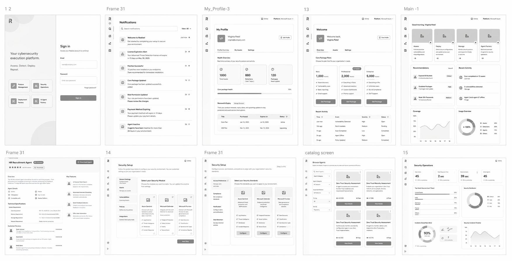
The feel before the interface
Before building frames, I defined the visual tone. For an enterprise security platform used by high-pressure security teams, the design couldn't feel consumer-light. But it also couldn't feel like a legacy enterprise tool — intimidating, data-dense, and dated. It needed to feel precise, capable, and just intelligent enough to trust.
0 1 2 3 4 5 6 7 8 9
Manrope is a geometric sans-serif — designed from mathematical proportions, which gives it an inherent sense of structure and logic. That felt right for a security platform where users are parsing complex data and making high-stakes decisions. The letterforms are open and clear, which means text stays legible even at the small sizes common in dense enterprise interfaces.
- Legibility under stress. Security teams scan fast. Manrope's generous x-height and open apertures make it readable at 11–12px — the kind of sizes appearing in data tables and status tags.
- Weight range. With 7 weights from Light to ExtraBold, Manrope creates a clear typographic hierarchy — users can scan a screen and immediately understand what's a heading, a label, and a data point.
- Modern but not trendy. Unlike display fonts, Manrope doesn't compete with the content. It's confident enough to feel premium, neutral enough to stay out of the way.
Colour in enterprise security UI isn't decorative — it carries meaning. Every colour decision below was made to communicate trust, hierarchy, and state. The palette is anchored by SkySecure.ai's brand blue and expanded with semantic and neutral tones that work in data-heavy contexts.
This is SkySecure.ai's brand blue — and its choice is deliberate. Blue is the most widely trusted colour in enterprise software. It signals reliability, competence, and calm authority — exactly what a team managing security incidents needs to feel when they open a dashboard. It's the colour of certainty in an uncertain context.
The specific tone — a medium-bright blue with strong saturation — avoids the coldness of navy and the informality of sky blue. It reads as modern, confident, and digital-native. Used for all primary actions, active states, and interactive elements, it creates a clear visual path through the interface.
SkySecure.ai's identity is built on blue — specifically the trust associations of enterprise-grade blue software. I used their brand colour as-is rather than substituting a violet. The blue grounds the product in their established identity while still feeling modern and considered.
In a security platform, colour does more than look good — it communicates severity. Green = resolved, amber = attention needed, red = critical action required. These meanings are universal to security teams and were applied consistently across all four modules so the system is learnable in minutes, not hours.
Spacing & Layout
Generous padding. Card-based content grouping for scannability under pressure. Dense-but-readable information layouts that respect the user's time without hiding data.
Tone
Professional and direct. Microcopy that explains what's happening, not what the feature is called. Empty states that guide next actions. No jargon in UI copy.
One source of truth across the entire platform
With four modules, multiple flows, and dozens of screens — building without a system would produce inconsistency everywhere. The design system was built in parallel with the UI, not after it.
Foundations
Colour tokens (primary, semantic, surface), typography scale, spacing grid, icon set, and elevation levels — defined once, applied everywhere.
Core Components
Buttons, inputs, cards, navigation bars, badges, modals, tables, and list items — each built with variants for all states: default, hover, active, disabled, loading, error.
Module-Specific Patterns
Assessment result cards, deployment step indicators, incident severity tags, agent configuration panels, chatbot message bubbles — reusable patterns built for the specific contexts of each module.
AI Interaction Components
Chatbot panel states, AI suggestion cards, execution progress indicators, confirmation modals — a dedicated component set for the AI layer that runs across all four modules.
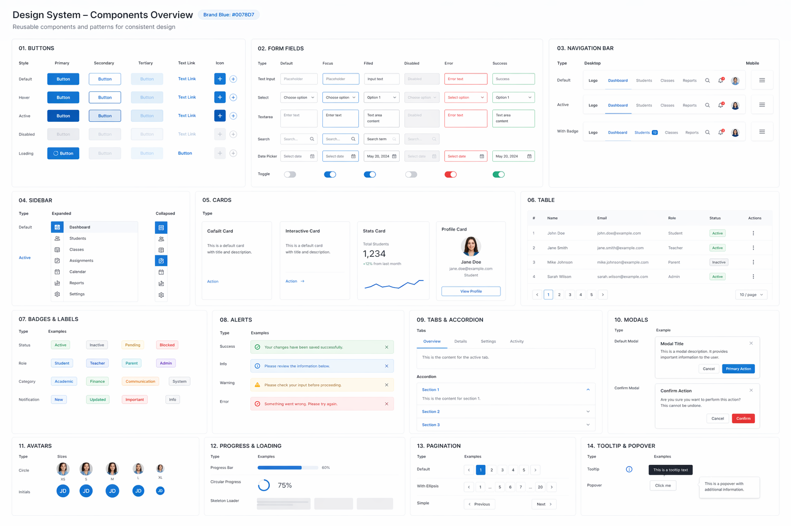
Where ideas become interfaces
34 high-fidelity screens across five complete flows — from first login to AI-guided deployment. Every decision from structure, visual language, and the design system comes together here. Use the flow tabs to navigate between experiences, and the arrows to step through each screen.
img/Realize/UI/Flow1/img1.png
Where real constraints broke the ideal plan
Every project has the version you design in theory and the version you have to actually ship. These were the moments where the gap between those two versions required the most careful thinking.
Designing for security professionals means designing for extremely high stakes, high complexity, and low tolerance for ambiguity — while also being asked to simplify and guide. The challenge was making the platform feel capable and trustworthy to an expert, while still being navigable for someone encountering it for the first time.
Several screens had been built by the time I joined, based on AI-generated designs. I had to work within what existed while simultaneously redesigning it — which meant making engineering-impact cases clearly and quickly.
Aarav (ops lead) needs high-level visibility and fast decision support. Neha (cloud engineer) needs detailed control and step-by-step execution. Every design decision had to serve both without compromising either.
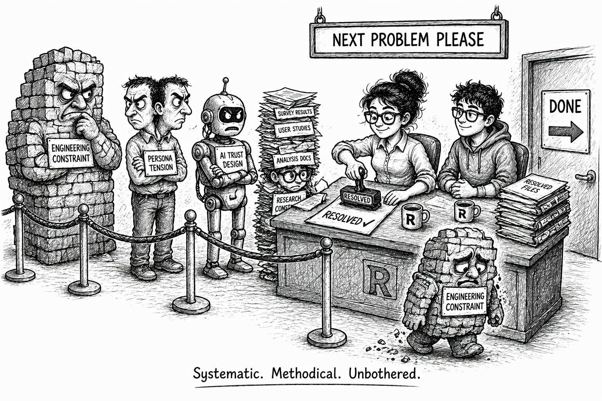
Security professionals are professionally trained to distrust systems they can't inspect. An AI that claims to "execute your deployment" sounds alarming without clear explanation of what it's actually doing at each step.
I couldn't run a broad research panel with enterprise security professionals — I had two users and time pressure. AI-assisted research had to do more work than usual.
What the design makes possible
Realize is still in active development. These outcomes reflect directional signals from the design process — validated through informal prototype walkthroughs and the clarity that structure brought to engineering conversations, rather than post-launch metrics.
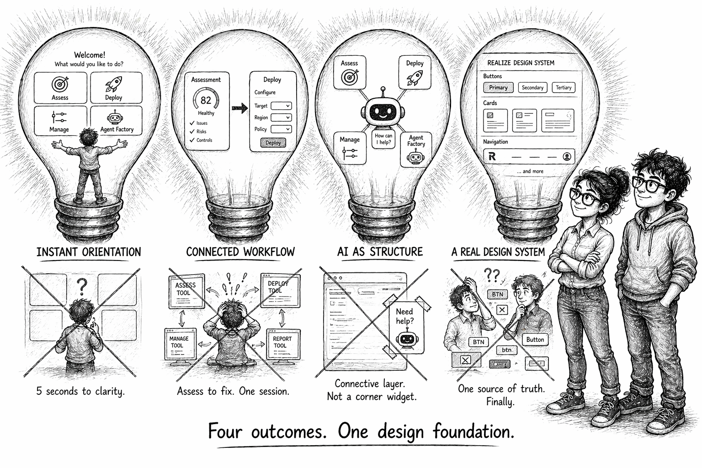
Still evolving. The outcome establishes a scalable design foundation for a product that didn't have one — and a clear logic for how it should grow from here.
Beyond screens — what this project taught me
This project started as a brief to "fix the UI." It became something much larger — a full, from-scratch product design exercise in a domain I had to learn while building. What looked like a UI problem revealed itself as a system problem: layered, fragmented, and deeply dependent on how different types of users interact with high-stakes information under pressure.
Structure is the design work — not a precursor to it
The hardest and most impactful decisions in this project happened before Figma opened. Once the IA and module logic were right, every screen fell into place naturally. Jumping to UI first would have created a beautiful product with a broken logic underneath.
AI research is only as rigorous as the designer using it
Using Claude and Perplexity to map the landscape quickly was genuinely effective — but only because every output was treated as a hypothesis, not a fact. The discipline of separating "AI found this pattern" from "a user confirmed this problem" kept the research credible even under time pressure.
Designing AI features means designing for trust, not just usability
Security professionals are trained sceptics. "The AI will deploy this for you" is not reassuring — it's alarming. The real design problem was making every AI action transparent, interruptible, and auditable. Trust is a design layer, not an afterthought.
Being the only designer forces clarity you don't get in a team
No design reviews means you have to internalise every critique yourself. Every decision I made had to be fully reasoned before I moved on — because there was no one else to catch it. That constraint made the rationale tighter, and the decisions faster.
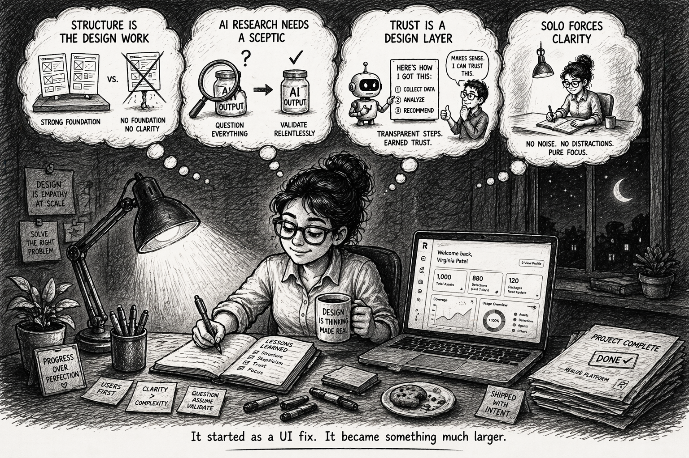
The hardest part wasn't designing screens — it was designing the system those screens live inside. Get that right, and everything else follows.
This Is Just the Start
This version of Realize is an MVP — it establishes the core structure, workflows, and design system. But the real potential of the platform comes from how it evolves over time. The next phase is focused on making the system smarter, more automated, and more personalised.
Expanding the Agent Factory with more pre-built agents and allowing teams to automate repetitive security tasks end-to-end — so security professionals can focus on decisions, not execution.
Making the system more proactive — suggesting fixes earlier, auto-triggering actions, and reducing manual decision-making at every handoff point between modules.
Personalised guidance based on experience level — faster, more direct for experts; more contextual and supportive for users newer to security tooling. Same platform, adapted experience.
Clearer visibility into what the AI is doing, why it's doing it, and giving users more granular control when needed — building on the transparency layer already in the MVP.
Adding new capabilities — compliance, reporting, integrations — without breaking the core workflow logic. The design system and IA were built specifically so the platform can scale without fragmenting.
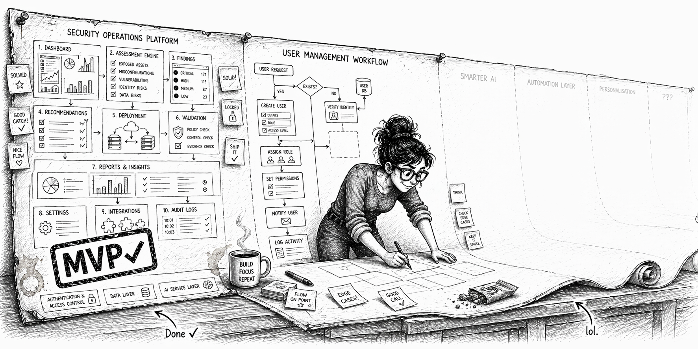